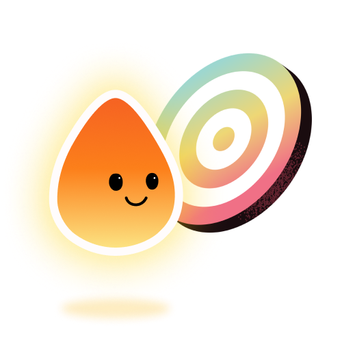
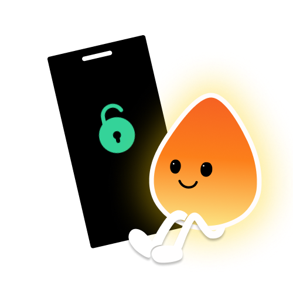

Choose the apps
Select the apps that most often pull you into a scrolling loop: social media, games, video feeds, or anything else you want a pause before.

iPhone app blocker with steps
Step1st helps you reduce doomscrolling by adding one real-world pause before the apps that pull you in. Pick the apps, set a daily step goal, and move before you scroll.
Free to download. Optional Pro subscriptions. No account required.

Timers and reminders ask for self-control at the exact moment you are least likely to have it.
If a limit can be bypassed in one tap, it starts to feel like a suggestion. Step1st changes the path to your most distracting apps by adding a physical step first.
This is not an unbreakable lock. Your step goal is adjustable because real life changes. The point is to interrupt autopilot and make the next scroll a conscious choice.
Built for real families and everyday routines, not productivity maximalists.
Select the apps that most often pull you into a scrolling loop: social media, games, video feeds, or anything else you want a pause before.

Pick a daily movement target that fits your real day. If the goal no longer makes sense, you can change it. That choice is part of the pause.
When you hit your step goal, the selected apps unlock. Olo celebrates the win so the experience feels less like punishment and more like progress.

Step1st was originally built after watching short videos quietly replace movement in a family routine. That is why the app focuses on a fair trade instead of shame: keep the reward, change the path to it.
If ordinary limits are too easy to ignore, the difference is not motivation. It is the type of friction placed between the urge and the app.
| Approach | How it works | What often happens | Best for |
|---|---|---|---|
| Apple Screen TimeBuilt into iPhone | Sets time limits for apps and categories. | Useful for awareness, but one-tap overrides can turn limits into suggestions. | People who mainly need reminders and usage reports. |
| Traditional app blockersHarder lockouts | Blocks selected apps during schedules or focus sessions. | Can feel punitive, especially when real life requires flexibility. | Deep work sessions, strict routines, or temporary detox periods. |
| Step1stWalk to unlock | Selected apps stay blocked until you reach a daily step goal. | The pause becomes physical: move first, then open the app with more intention. | Doomscrolling loops, short-video habits, and people who want screen time tied to movement. |
Step1st uses native iPhone frameworks and keeps the experience simple.
Selected apps are shielded through Apple system APIs. Step1st does not read your messages, browsing history, or personal content.
Steps are handled through iPhone motion data and optional Apple Health integration. No account is required to start using the app.
No. Step1st is designed as helpful friction, not punishment. The step goal is adjustable because real life is not the same every day.
Yes. Step1st is a screen time control app with a movement-based twist: selected apps stay behind your step goal until you move enough.
Apple Screen Time limits are timer-based and can be easy to override. Step1st uses a step goal as the unlock condition, so opening distracting apps requires movement first.
Yes. Step1st is designed for doomscrolling loops where you open social or short video apps automatically. It adds a physical pause by asking you to walk before those apps unlock.
Yes. You can use Step1st without creating an account. It is built to feel lightweight and private from the first launch.
Download Step1st on iPhone and put your most distracting apps behind a daily step goal.